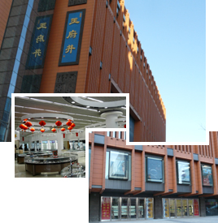
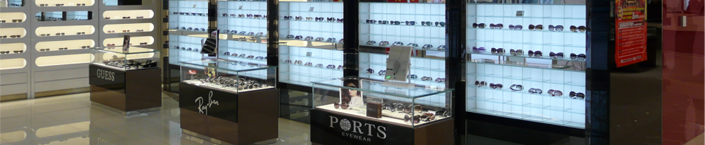

- 小
- 中
- 大
北京大明眼镜创建于1937年，是国内开业较早的少数几大眼镜名店之一，是京城著名的中华老字号企业，素以“验配精准、技术精良专业能力强和能承接高难光度眼镜验配制作”而闻名。自公司成立以来，历届党和国家的领导人，众多驻华使节、社会名流专门在“大明眼镜”验光配镜，同时，北京大明眼镜又藉其诚信服务和朴实作风，深得大众百姓的信赖，在中国眼镜零售业中一直处于领先地位。郭沫若同志生前在到“大明”验光配镜时与“大明”结下了深厚的友情，特意为“大明”题写了“大明眼镜公司”的牌匾。
北京大明眼镜是一个开拓创新，不断进取的企业，技术、经营、管理、专业等各项能力始终名列中国眼镜零售行业前茅。上个世纪70年代末，北京大明眼镜首家引进了电脑验光机、查片检测仪和自动磨边机，后来又陆续使用新型综合验光仪、电脑磨边机、角膜地图仪，验光配镜的硬件配备确保顾客得到可靠产品质量和服务质量。北京大明眼镜的专业技术、经营思路也一直居行业领先地位。“大明”是眼镜零售业中最早细分市场，开设精品厅，开发高端眼镜消费市场的企业；是最早把国际著名眼镜品牌引进和介绍给中国消费者的商家之一；是目前汇集著名国际眼镜品牌最多的商家之一；是国内老字号眼镜店最早开展连锁经营的企业之一；是第一家推广软性隐形眼镜的商家；是国内第一批配制渐进多焦点眼镜的商家……这许多的第一，是“大明”实力和创新精神的充分体现。
“北京大明眼镜”在引领眼镜零售行业潮流的同时，也秉承和增强了老字号承接高难绝活的传统和本领。很多眼镜店验不了的光度，“大明”能验；别的眼镜店配不了镜子，“大明”能配！为此，许多顾客千里迢迢专程来北京找大明眼镜验光配镜。“大明眼镜眼镜专家”是北京大明眼镜数十年的不懈努力在消费者心目中树立的专业形象，它也是广大消费者对大明专业实力的充分肯定。
恪守老字号“质量第一”的宗旨，也是北京“大明眼镜”字号经久不衰的重要支撑点。为确保质量，北京大明眼镜对进货、验配、交付各环节实施全程把关。一抓产品质量，严把进货关，只经销高质量的品牌产品，全部商品通过正当渠道进货。二抓验配质量验光配镜的硬件配置确保达到国家标准，验光师、配镜师统一培训、持证上岗，并严格质量检验，所有商品达到优质标准才能交付。三抓质量监督检查，常年聘请北京市技术监督局产品质量检验所坐堂抽检产品质量。多年来，北京大明眼镜先后被评为或授予为“验光配镜质量可信单位”、“北京市商业优质服务十佳企业”，在历年国家产品质量抽检中配装眼镜质量连续100%合格，是国家监督抽查通报表彰企业，是 ISO9001质量体系获证单位，是中国商业名牌企业、中国商业服务名牌和北京市商业名牌企业、北京市商业服务名牌，北京市无假冒商标示范商场和北京市守信企业。“大明”商标自1998年起连续五届被评为北京市著名商标。

七十多年的累积，使北京大明企业文化的底蕴越来越厚重、使“大明”品牌的含金量越来越高。正是凭借字号和品牌的价值，北京大明眼镜于1997年初在国内老字号眼镜企业中率先发展连锁经营，实现了从单店经营到连锁经营的飞越。1998年又先后实现了与有上百年历史的晨光眼镜、近百年历史的精益眼镜和70多年历史的明明眼镜等京城老字号眼镜零售和批发企业的强强联合，进一步巩固了在眼镜零售企业的龙头地位。截止到目前，大明眼镜已建立起覆盖北京各城区和远近郊区的60多家连锁店、布局合理的连锁经营网络。同时，为方便顾客验光配镜，也为扩大大明品牌的影响力，北京大明眼镜近年来也逐步扩大了连锁店的覆盖范围。2002年先是在河北省三河市和涿州市开设了直营连锁店，初步实现了跨区域发展，连锁店总数近 70家。
在2000年底，“北京市大明眼镜公司”整体改制为“北京大明眼镜股份有限公司”，完成了从单一产权制度的纯国有企业到多种所有制成份入股、产权多元化的现代公司制企业的转变，建立了现代企业制度。北京大明眼镜将继续发扬“沉稳而不失创新，久远而不失活力，博大精深”的传统，再接再厉，为百姓视力健康，为中国的眼镜事业做出新贡献。